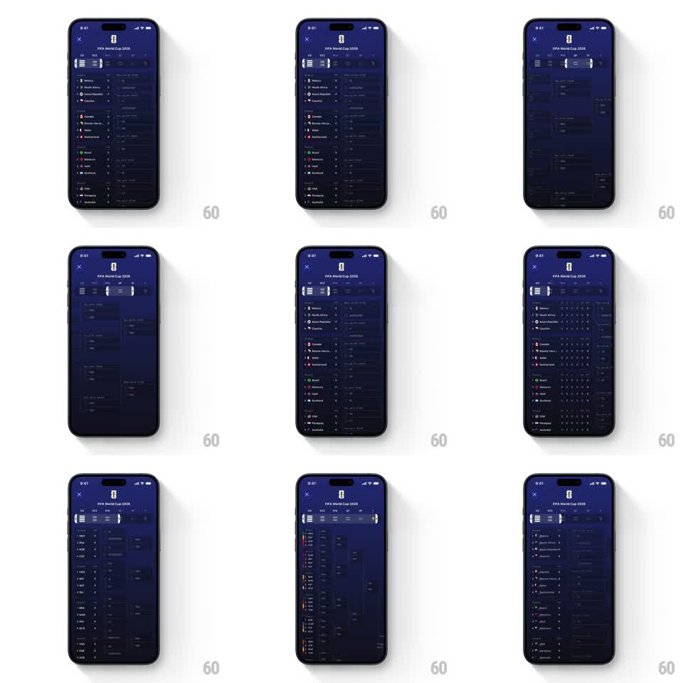

Media
Frame-by-frame

Rebuild this interaction 1:1: Apple Sports' FIFA World Cup group-stage browser - a horizontally scrolling strip of group chips under the header; swiping the strip (or the standings below) moves a sliding active pill between groups while the standings table crossfades to the selected group, keeping chip bar and content perfectly synced.

Rebuild this interaction 1:1: Apple Sports' FIFA World Cup group-stage browser - a horizontally scrolling strip of group chips under the header; swiping the strip (or the standings below) moves a sliding active pill between groups while the standings table crossfades to the selected group, keeping chip bar and content perfectly synced. ## Integration Integration: stack-agnostic spec - springs given as stiffness/damping, timed motions as duration + curve; map every value to your framework and animation library of choice. ## Scene Dark navy screen: "FIFA World Cup 2026" header, a horizontal chip strip of group codes (scrollable, arrows at edges), and the group standings table below (flag, team, W/D/L, points columns). ## Motion spec Pattern: synced pager - chip strip drives a paged table. - Drag on the table: content pages horizontally 1:1 with the finger; the chip strip scrolls proportionally and the active pill slides/stretches between chips tracking the same progress. - Release: nearest page settles (spring ~330/28, 300ms); the pill lands centered on its chip with a small overshoot. - Table content: outgoing page slides and fades (opacity 1 -> 0 over the last 30% of the swipe), incoming fades in (first 30%). - Tap a chip: strip scrolls the chip to center (250ms) and the table jumps pages with a fast slide (300ms). - Pill: rounded rect behind the active chip, width hugging the label + 12px padding. ## Calibration - The pill stretches mid-transit (up to 1.2x width at fast swipes) - a rigid pill breaks the physical link. - Strip and table are one gesture system; any lag between them reads as a bug. ## Reduced motion Table crossfades between groups (200ms); pill slides without stretch. ## Don't miss - Edge arrows on the strip appear only when more chips exist in that direction. - The pill is always visible - auto-scroll keeps the active chip on screen.